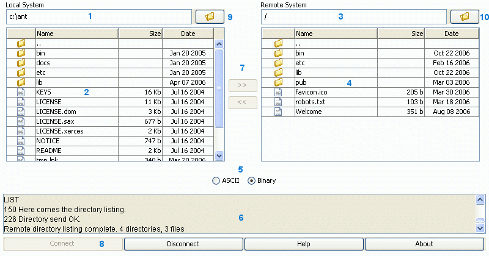
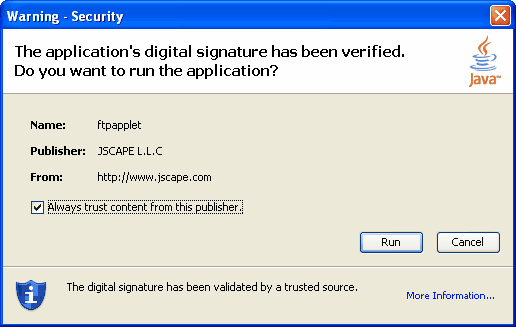
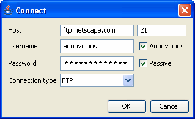
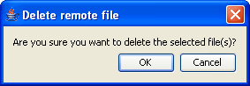
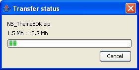
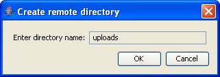

User interface


|
User interface |
|
Figure 1. User interface
Below is a screenshot of the Secure FTP Applet user interface. Your display may vary slightly based on your operating system, browser used and any customized look and feel parameters you may have provided to the applet. A description of each component is provided below.
Figure 1.

| 1. | Current local directory - Displays the full path of your current local directory. |
| 2. | Local directory - Displays files and child folders in your current local directory. |
| 3. | Current remote directory - Displays the path of your current remote directory. |
| 4. | Remote directory - Displays files and child folders in your current remote directory. |
| 5. | Transfer mode - Switch between ASCII and Binary transfer modes |
| 6. | Message window - Displays messages sent to and received from the FTP server. |
| 7. | Upload / Download - Buttons for uploading and downloading files. |
| 8. | General commands - Buttons for connecting to FTP server, disconnecting from FTP server and accessing help and information about the applet. |
| 9. | Local drives - Displays local drive listing. |
| 10. | Remote directory history - History of directories accessed on remote system. |
Figure 2. Signed applet dialog
Secure FTP Applet requires access to local resources. For this reason the applet must be signed by a certificate issued by a certificate authority (CA). When loading an applet that is signed by a CA a security dialog is displayed that lets the user know that the applet has been signed and is asking for permission to access local resources. The end user must click "Yes" for the applet to run. If the user clicks "Always" then this applet will always be trusted and the dialog will not be displayed in future sessions.

Figure 3. Connect dialog
To connect manually click on the "Connect" button. The following dialog will be displayed prompting you for hostname, port, username and password information. If you wish to use an anonymous connection click on the "Anonymous" checkbox to generate an anonymous username and password. Select the connection type you would like to make. For a secure connection select any of the secure options listed in the Connection type drop-down. Click on the "OK" button to establish a connection to the FTP server.

Figure 4. Delete file dialog
To delete one or more items in a directory listing select those items that you wish to delete and click on the Delete button or press the delete key on your keyboard. A confirmation dialog will be displayed asking you to confirm this action. Click OK to confirm or Cancel to abort this operation.

Figure 5. Rename file dialog
To rename one or more files or directories select those items that you wish to rename and click the Rename button. For each item selected a dialog will be presented with the current name highlighted. Type in the new name and click OK to confirm or Cancel to abort this operation.

Figure 6. Progress dialog
When transferring files a progress dialog will be displayed indicating your transfer status. To cancel a transfer click on the "Cancel" button. This will cancel the current file being transferred as well as any other files or directories that were selected for transfer.

Figure 7. Create directory dialog
To create a directory click on the Mkdir button. A dialog will be displayed prompting you for the name of the directory to create. Click the OK button to create the directory or Cancel to abort this operation.
